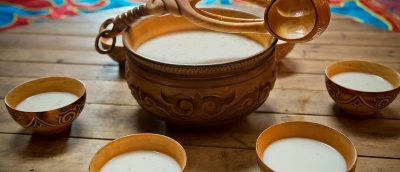
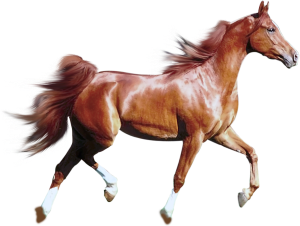

Куми́с (від тюркського, башк. ҡымыҙ, тат. qımız, каз. қымыз, кирг. кымыз, якут. кымыс, тур. kımız, узб. qimiz, монг. айраг) —
кисломолочний напій із кобилячого молока, отриманий унаслідок молочнокислого і спиртового бродіння. Кумис містить етиловий спирт
і оцтовий альдегід[1].
Має приємний освіжаючий кислувато-солодкий смак. Кумис із кобилячого та знежиреного коров'ячого молока — цінний харчовий продукт,
який широко застосовують у медицині для лікування туберкульозу, захворювань легенів нетуберкульозної етіології, рекомендується при
функціональних розладах нервової системи, захворюваннях печінки і жовчних шляхів та при інших захворюваннях. Численні дослідження
підтвердили антибактеріальну дію кумису та його заквасок.


Вітаміни А і В кобилячого молока повністю зберігаються в кумисі. Після молочнокислого бродіння вміст вітаміну
С в кумисі збільшується. Серед продуктів тваринного походження, кумис на першому місці за вмістом вітаміну С,
що значно підвищує його лікувальні властивості. Встановлено, що лікувальні властивості кумису залежать не
від складу і властивостей сировини, а від розвитку в молоці мікрофлори (бактерій і дріжджів у певному
співвідношенні), унаслідок життєдіяльності якої утворюються такі цінні речовини, як: молочна кислота, спирт,
вуглекислий газ, антибіотики, вітаміни.
Для приготування кумису використовують лише кобиляче молоко. Кобилу доять з інтервалом через годину, оскільки одне доїння дає лише близько 1 літра молока. За весь день доїння збирають близько 5 літрів. При доїнні спершу підводять лоша, яке починає смоктати вим'я, інакше кобила не підпустить доярку. Потім його відводять, і далі доїть доярка.